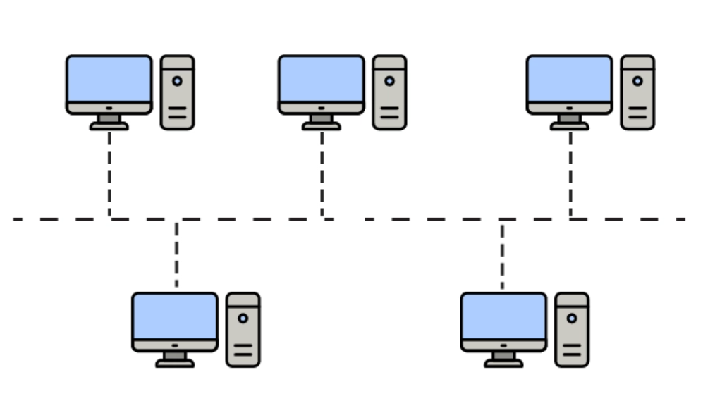
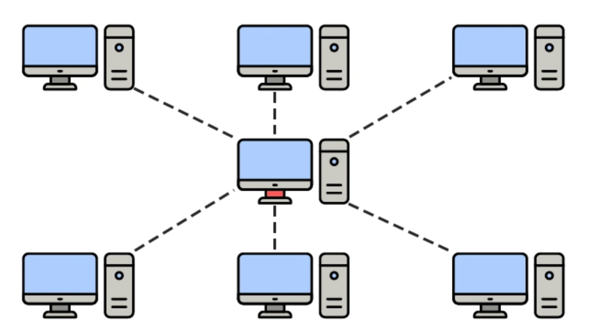
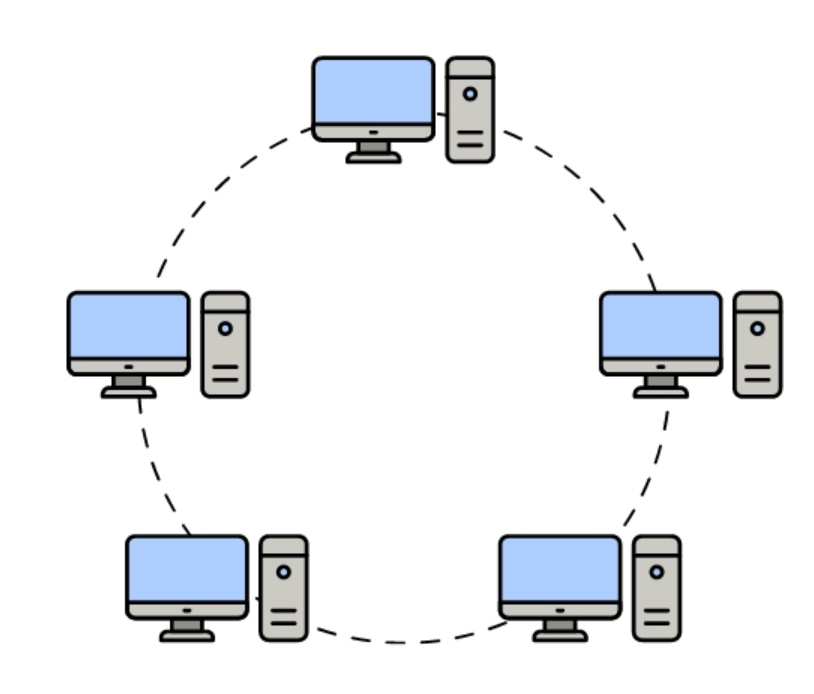
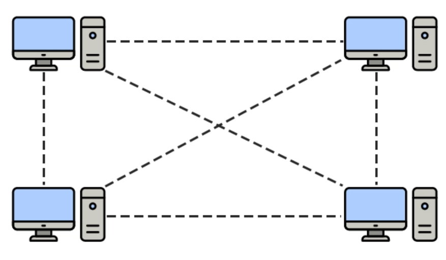
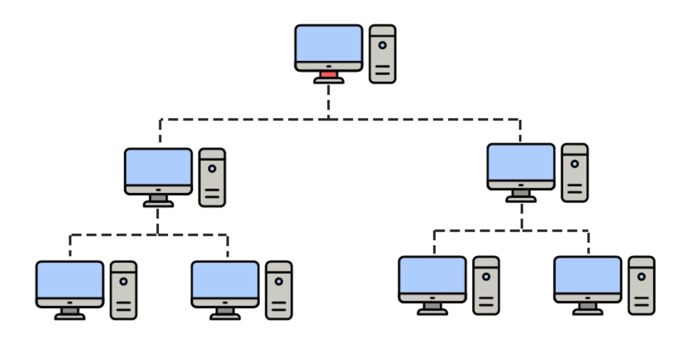

Capa Física
La capa más básica define las especificaciones eléctricas, mecánicas, procedimentales y funcionales para activar, mantener y desactivar el enlace físico entre sistemas. Transmite el flujo de bits a través del medio.
Ejemplo real: El cable Ethernet que conecta tu computadora al router transmite señales eléctricas que representan los bits de información a través de sus conectores RJ-45, operando completamente en la capa física.
Topologías de la Red
Las topologías de red son las diferentes distribuciones de los dispositivos, como enrutadores, computadoras, impresoras, y las distintas conexiones que pueden haber en la red. Se pueden ilustrar gráficamente.
Tipos de topologías de red y sus características
Topologías físicas. Se refiere al diseño de las interconexiones entre los dispositivos y las conexiones físicas de la red, como cable (DSL, Ethernet), microondas o fibra óptica. Existen varias topologías físicas comunes, como se muestra en la siguiente ilustración y se describen posteriormente.
- Red de bus: Cada dispositivo está conectado en serie a lo largo de una ruta lineal. Esta disposición se encuentra hoy principalmente en las redes de distribución cableada de banda ancha. 
- Red de estrella: En esta red, un dispositivo central está conectado directamente con todos los demás dispositivos. Las redes de área local (LAN) que utilizan conmutadores Ethernet, como la mayoría de las redes cableadas de oficina, tienen una configuración de estrella. 
- Red en anillo: En esta configuración, los dispositivos están conectados en una red como un círculo. Unas redes enviarán la señal en un solo sentido y otras podrán enviar la señal en los dos sentidos. 
- Red de malla: Esta red enlaza las conexiones con los dispositivos de tal manera que haya disponibles múltiples rutas entre al menos algunos puntos de la red. 
-
Red de árbol: Llamada también estrella de estrellas, en ella se conectan diferentes topologías de estrella en una configuración de estrella.

Topologías lógicas. La topología lógica para una red es algo más estratégica y abstracta. Generalmente consiste en comprender conceptualmente cómo y por qué la red está organizada de la forma en que está, y cómo se mueven los datos a través de ella. Se refiere a la relación lógica entre los dispositivos y las conexiones. Una conexión lógica diferirá de una ruta física cuando la información pueda dar un salto invisible en puntos intermedios. En las redes ópticas, los multiplexores ópticos (ADM) crean rutas ópticas lógicas, porque el salto ADM no es visible para los nodos del punto final. Las redes compuestas por circuitos virtuales tendrán una topología física de acuerdo al ámbito real de conexión, como el cable, y una topología lógica basada en los circuitos. En ciertas ocasiones, la topología lógica corresponde a la configuración tal como la ve el usuario, lo que significa la conectividad de la red.
Redes IP y Ethernet. Las dos redes más utilizadas hoy en día, IP y Ethernet, están totalmente entretejidas a nivel de conexión porque cualquier usuario puede conectarse con cualquier otro, a menos que se introduzca algún medio, como un firewall, para bloquear conexiones no deseadas. La conectividad total se debe a los protocolos que se manejan en la red, como Ethernet, y no de la topología física de la red como tal. Por tal razón, para las personas cualquier topología física de red podrá parecer totalmente entrelazada.
Tipos de redes
| Tipo de Red | Definición | Características | Ejemplo |
|---|---|---|---|
| LAN (Local Area Network) | Red de área local que conecta dispositivos en un área geográfica pequeña (como una casa, oficina o edificio). |
|
Redes en empresas para compartir impresoras o servidores. |
| WLAN (Wireless Local Area Network) | Red de área local inalámbrica que permite conexiones sin cables mediante tecnología Wi-Fi. |
|
Red doméstica Wi-Fi o conexión en cafeterías. |
| WAN (Wide Area Network) | Red de área amplia que interconecta múltiples LANs en grandes distancias (ciudades, países o globalmente). |
|
Internet o redes corporativas que unen sucursales en diferentes países. |
| VPN (Virtual Private Network) | Red privada virtual que crea un túnel cifrado sobre una red pública (como Internet) para acceder a recursos de forma segura. |
|
Trabajadores que acceden a la red de su empresa desde casa. |